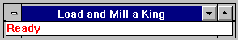
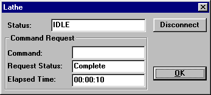

Cell Manager Controls
The cell manager controls are split into several areas as shown in Figure 2.

Title Bar
The name of the cell manager will always be displayed in the Title Bar. This is the name of the cell manager that is used as a reference to it by all the other programs and modules within the Denford CIM System.
Menu Bar
File Menu
|
Open |
This will open a sequence file. |
|
Close |
This will close the sequence associated with the currently activate cell sequence window. This option is only enabled when the active window in the cell manager user interface is a cell sequence window. |
|
Exit |
This will make the cell manager terminate. |
Service Menu
|
Disconnect |
This forces the cell manager to disconnect itself from any remote client program that previously made a DDEML link to it. This will stop the cell manager from receiving any commands from a remote source. The driver will only be controllable manually. |
Run Menu
This menu is associated with cell sequences and is greyed out when the a non-cell sequence window is active.These menu options act upon the currently selected (hi-lighted) sequence.
|
Start |
Once loaded a sequence can be started using this menu option. |
|
Stop |
Once the sequence is running it can subsequently be stopped using this menu option. |
|
Reset |
This will force the sequence to return to its initial state. When the sequence is subsequently restarted it will start from the beginning of its sequential list of machine commands. |
WARNING: Currently there is a problem that causes the cell manager to skip the sending of several machine commands, this occurs when a sequence is stopped using the 'Stop' menu item and then restarted using the 'Start' item.
Service Menu
|
Disconnect |
Disconnects the cell manager from its parent, the Host, thus preventing the Host from sending it command requests. At this point the cell manager can only be controlled manually. |
Disconnect Menu
|
All |
This will disconnect the cell controller from all the machines. Doing this will stop the cell controller from receiving status information from the device drivers or sending commands to them. |
Window Menu
|
Arrange Icons |
This option will tidy up iconised windows. |
|
Close All |
This will close all the open sequences. |
|
1,2,3,... |
This will activate the window whose title is listed next to the number. |
Sequence Status Window

This window textually shows the status of a sequence. There is one window per sequence. The window will disappear when the sequence is terminated.
Cell Machines Status Window
This window shows the status of all the machines controlled by the cell manager. A graphical picture of the cell is displayed.
Machine Status Window - For each machine in the cell a small status window is displayed. Each status window has a small caption bar with which it can be positioned in the same way that any ordinary window can. The status window displays the machine name in the left hand side of the window. On the right hand side, a colour coded description of the machine's status is displayed. The colour coding is as follows:
|
RED with an Asterisk |
Indicates that it is ‘Busy’ |
|
|
GREEN |
Indicates that it is IDLE. Note that there is no charater associated with the idle state. |
|
|
YELLOW with a question mark |
Indicates that the machine's status is not known by the cell manager because it is not connected to it (via a device driver). |
|
|
YELLOW with an exclamation mark |
Indicates that an error has occurred in the associated machine's device driver. |
Machine Status Dialog - Double click the left mouse button on a machine status window and a dialog box with a more detailed description of the machine's status will appear. This dialog box is shown in Figure 3. The title bar of the dialog box is labeled with the name of the machine.

|
Status Field |
At the top of the dialog box is a text box with a more detailed description of the status of the machine. |
|
Connect/Disconnect Button |
Next to the status field is a button. Depressing this button toggles the link between the cell controller and the device driver. If the cell controller has a network link (DDEML) to the device driver the button will be labelled 'Disconnect', depressing it will force the cell controller to break the communication link. When the device driver is disconnected the status field will display 'NOT CONNECTED' and the button will be labelled 'Connect'. If the cell controller is not connected to the device driver it can not send commands or receive status information. |
Hints
The cell controller will attempt to connect to all the device drivers on start up, so it is best to start after them. When an error occurs an error message will be displayed in the sequence status area.